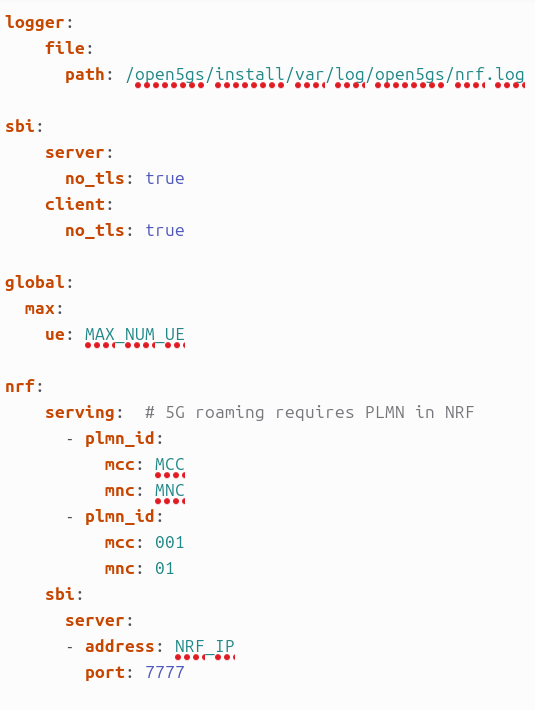

INSTALAR Open5GS CURSO 2025/2026
Importante: Si la máquina virtual se crea en Proxmox, confirmar que:
Processor → Type → host
Índice
- 1. Instalación de Docker y Portainer
- 2. Instalación de Open5GS
- 3. Roaming Open5GS
- 4. Separar UPF Open5GS
1. Instalación de Docker y Portainer
Accedemos al repositorio:
https://github.com/Tknika/5g-kutxa-ansible/tree/portainer
Ejecutamos los pasos indicados.
Instalar Ansible
Instalar Docker y Portainer
sudo ansible-pull -U https://github.com/Tknika/5g-kutxa-ansible.git --checkout portainer -i localhost,
Reiniciar el equipo para aplicar correctamente la pertenencia al grupo Docker:
Verificación
Comprobar que Docker está funcionando:
O acceder a:
2. Instalación de Open5GS
Accedemos al repositorio oficial:
https://github.com/herlesupreeth/docker_open5gs
Descargar repositorio
Instalar Git:
Clonar el repositorio:
Descargar imágenes Docker
En este caso solamente descargamos Open5GS y componentes asociados, sin IMS.
Open5GS
docker pull ghcr.io/herlesupreeth/docker_open5gs:master
docker tag ghcr.io/herlesupreeth/docker_open5gs:master docker_open5gs
Grafana
docker pull ghcr.io/herlesupreeth/docker_grafana:master
docker tag ghcr.io/herlesupreeth/docker_grafana:master docker_grafana
Metrics
docker pull ghcr.io/herlesupreeth/docker_metrics:master
docker tag ghcr.io/herlesupreeth/docker_metrics:master docker_metrics
Configuración previa
Editar el fichero .env y configurar:
- MCC
- MNC
- TAC
- DOCKER_HOST_IP (IP del equipo donde se realiza la instalación)
Aplicar los cambios:
Desplegar Core 5G Stand Alone
Levantar el despliegue completo:
Verificación
Comprobar desde Portainer que todos los contenedores se han levantado correctamente.
3. Roaming Open5GS
Para poder trabajar con varias radios dentro de la misma aula:
- El Core y la radio trabajarán en un PLMN (por ejemplo
00110). - El terminal móvil se conectará utilizando otro PLMN (por ejemplo
00101).
Pasos
1. Conectar Core y radio
Configurar tanto el Core como la radio con:
2. Crear abonado
Agregar en la WebUI un usuario utilizando:
3. Configurar NRF
Editar el fichero:
y realizar la configuración correspondiente.

4. Separar UPF Open5GS
Equipo donde actualmente está instalado el UPF
Paso 1. Crear nuevo compose
Copiar:
como:
Paso 2. Modificar core-sinUPF.yaml
- Comentar o eliminar toda la sección correspondiente al UPF.
- Añadir en el servicio SMF:
Paso 3. Modificar .env
Paso 4. Levantar servicios
Equipo donde se instalará el nuevo UPF
Paso 1. Crear nuevo compose
Copiar:
como:
Paso 2. Modificar UPF2.yaml
- Comentar o eliminar todos los servicios excepto el UPF.
- Configurar la red en modo host.
- Eliminar la sección
sysctls.
Paso 3. Modificar .env
Paso 4. Levantar servicios
Verificación final
Comprobar desde Portainer que:
- El Core está operativo.
- El SMF escucha en UDP 8805.
- El UPF se registra correctamente contra el SMF.
- Todos los contenedores aparecen en estado
running.